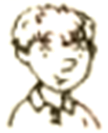
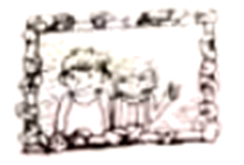

2023年北京中考英语 第21—23题 解析
21. ________ I’m interested in designing clothes and want to study it at college.
Alice
22. ________ I enjoy making wall posters of animals and I’d like to read picture books.

Tony
23. ________ I like making hags and want to visit art museums to get creative ideas.
Harry
【答案】21. B 22. A
23. C
【解析】
【导语】本文是一篇应用文。主要介绍了四个短期美术课程，并为三个孩子匹配适合他们的课程。
【21题详解】
根据“I’m interested in designing clothes and want to study it at college.”可知爱丽丝对设计衣服感兴趣，想要在大学学习设计衣服，B项“艺术很重要 本课程教你不同的绘画技巧。我们会让你画最新款式的衣服。如果你喜欢服装设计，想在大学里学习它，加入我们吧！”与之匹配。故选B。
【22题详解】
根据“I enjoy making wall posters of animals and I’d like to read picture books.”可知托尼喜欢制作动物海报和读图画书，A项“野生的艺术 这门课程是关于素描和绘画的。你将使用你的新技能制作一幅动物海报。我们有很多图画书可以给你灵感。”与之匹配。故选A。
【23题详解】
根据“I like making hags and want to visit art museums to get creative ideas.”可知哈里喜欢制作包，并且想要参观艺术博物馆来寻找创作灵感，C项“创造性的艺术 这门课程是关于制作包来装你的运动服。我们提供很多材料。你还可以参观艺术博物馆，获得一些创意。”与之匹配。故选C。
(二) 阅读下列短文, 根据短文内容, 从短文后各题所给的A、B、C、D四个选项中, 选择最佳选项。
B
Betty was excited to show her brother David the basket filled with seashells. But David was busy helping Dad get everything back into the car. “What are you going to do with those useless things?” he said. “You can’t take them home.”
“But I want these seashells,” Betty said unhappily. “Each one is a different shape and size. They are all special.”
Suddenly, David saw the water rising along the beach. He shouted to Betty, “The waves （海浪）are about to take your toys!” As Betty ran to get her things, she called to David, “Please put my seashells into the car!”
David was putting one of the beach chairs into the car when his foot accidentally knocked over the basket. As David lifted a heavy box, he slipped（滑倒）and dropped the box right on top of the seashells, breaking most of them into pieces.
Betty came back with her toys. When she saw her seashells broken, she began to cry. David started to pick up the seashells and place them carefully back into the basket.
Dad tried to explain to Betty that it was an accident. But Betty was still upset. David also felt sad. He thought about what he could do to make it up to his sister. When he got home, he had a perfect idea.
The next morning David waited for Betty with the basket of seashells and some strong glue. He also had a framed（装框的）photo of the two of them. Together they looked through the basket and found several seashells that were not broken and could still be used. Then they glued the seashells to the frame.
“I’m really sorry, Betty.” David said. “Yesterday I was very careless with something special to you.”
Betty looked at her brother and smiled. “You’re the best big brother ever!”
